드라마 회귀·환생·이세계 웹툰 추천 TOP 30
드라마 작품 중에서 회귀, 빙의, 환생, 이세계 같은 요소가 들어간 작품만 골랐어요. 네이버웹툰·카카오웹툰·레진코믹스에서 조건에 맞는 작품 71개 중 인기 순으로 30개를 골랐어요. 인기 TOP 3: 데뷔 못 하면 죽는 병 걸림, 백작가의 망나니가 되었다, 퀘스트지상주의
2026-09-29 기준 · 성인 작품 제외
내 취향으로 더 좁혀서 추천받기 →-
1카카오웹툰
데뷔 못 하면 죽는 병 걸림
4년 차 공시생, 낯선 몸에 빙의해 3년 전으로 돌아왔다. 그리고 그의 눈앞에 나타난 갑작스러운 상태창의 압박! [돌발!] [상태이상: '데뷔가 아니면 죽음을!' 발생!] 돌연사 위협 때문에 팔자에도 없던 아이돌에 도전하게 된 주인공의 대환장 일지. ※특이사항: 빙의 전 아이돌 데이터…
드라마빙의설렘폭발카카오웹툰에서 보기 → -
2
 카카오웹툰
카카오웹툰백작가의 망나니가 되었다
눈을 떠보니 소설 속이었다. 그것도 망나니로 유명한 백작가의 도련님 몸으로…. 그리고, 소설 속에서 나를 박살 냈던 막강한 주인공 최한이 곧 여기로 온다.
드라마빙의미스터리카카오웹툰에서 보기 → -
3
 네이버웹툰
네이버웹툰퀘스트지상주의
[외모지상주의], [싸움독학], [인생존망]과 세계관을 공유하는 작품! 공부, 싸움, 외모. 뭐 하나 잘난 것 없는 평범한 고등학생 ‘김수현’의 눈앞에 갑자기 퀘스트창이 나타났다! 첫 번째 퀘스트, [엄마한테 사과하기]를 완료한 수현은 보상으로 키가 3cm 커지게 되는데! 퀘스트 엄청…
드라마환골탈태사이다집착녀현대네이버웹툰에서 보기 → -
4
 카카오웹툰
카카오웹툰빌어먹을 환생
마왕을 없애기 위해 용사와 함께 모험을 하던 하멜. 마왕과의 대결 직전 용사 베르무트 라이언하트를 구하고 대신 죽음을 맞이하게 된다. 그리고 300년 후. 하멜은 용사의 머나먼 후손인 유진 라이언하트로서 환생한다. 죽기 전의 육체보다 월등한 성능을 가진 천재로서. 전생의 경험을 토대로…
드라마환생카카오웹툰에서 보기 → -
5
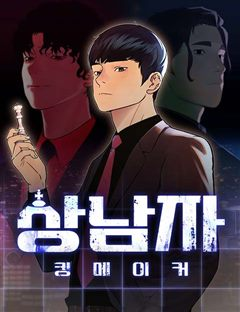
네이버웹툰상남자
오로지 성공만을 바라보며 기업 정점의 자리까지 오른, 최고의 샐러리맨 한유현. 대가로 사랑하던 모든 이를 잃어버린 후, 후회 섞인 인생을 돌아보는데... 어느 날 모든 기억을 안은 채, 젊은 시절의 그때로 돌아가게 된다. 모든 것의 시작점인 신입사원의 위치에서, 그가 다시 삶을 설계한…
드라마회귀사이다오피스청춘네이버웹툰에서 보기 → -
6
 네이버웹툰
네이버웹툰재벌집 막내아들
[화제의 드라마 원작 웹툰!] 13년 동안의 수고를 배신으로 돌려받다니! 머슴처럼 살다 버려진 순양그룹의 실장, 윤현우. 모든 게 끝났다 싶었을 즘, 순양그룹 진 회장의 손주 진도준으로 깨어난다! 하지만 상속권과는 거리가 먼 재벌집 막내아들 진도준. 과연 그는 가족 정치극에서 최후의…
드라마회귀빙의타임슬립고자극드라마네이버웹툰에서 보기 → -
7
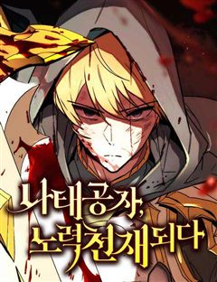
네이버웹툰나태 공자, 노력 천재 되다
잠을 도피처로 삼아 온 소년 아이른 파레이라. 사람들은 그를 나태 공자라 부르며 조롱했지만 그는 변할 생각이 없었다. 어느 날 어느 검사의 꿈을 꾸기 전까지는... 그것은 그저 묵묵히 수십 년간 검을 휘두르며 단련하는 한 재능 없는 사내에 관한 꿈이었다.
드라마환골탈태중세판타지액션서양왕족/귀족네이버웹툰에서 보기 → -
8
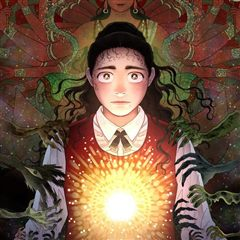
카카오웹툰극락왕생
당산역 귀신 박자언 X 막무가내 지옥의 호법신 도명 윤회의 끝, 극락왕생을 위해 펼치는 퇴마 활극! “들려? 노래 불러. 체리필터의 [낭만 고양이]로…” 비 오는 날이면 합정에서 당산으로 넘어가는 2호선 지하철에 나타나는 ‘당산역 귀신’. 자신이 보이는 인간에게 다가가 ‘낭만 고양이’…
드라마환생개그카카오웹툰에서 보기 → -
9
 카카오웹툰
카카오웹툰환생의 정석
최강의 무가 사미온에서 외팔이 방계로 태어난 데이븐. 반쪽짜리 무인이라며 갖은 조롱과 멸시를 딛고 사미온의 직계 천재마저 넘어섰으나, 결국 가문과 부모에게 버림받아 가장 초라한 최후를 맞이하게 되는 줄 알았는데... 500년 뒤 새로운 몸에서 눈을 떴다! ‘내게도 오른팔이 있다?’ 새…
드라마빙의카카오웹툰에서 보기 → -
10
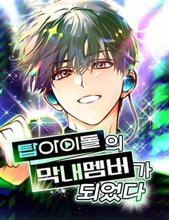
네이버웹툰탑아이돌의 막내 멤버가 되었다
"25살…그거 아이돌은 못하는 나이잖아요." 유명 서바이벌 아이돌 오디션 '스타더스트 프로젝트'에서 탈락했던 도서한. 꿈에 미련은 못버리고 현실과 타협한 채 알바를 전전하는데…눈을 떠보니 8년 전으로 돌아왔다. 그것도 '스타더스트 프로젝트'를 시작하기 직전으로! 막내가 된 (영혼만은)…
드라마회귀예술성장물아이돌네이버웹툰에서 보기 → -
11
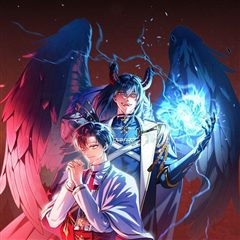
카카오웹툰회귀자 사용설명서
어느 날, 이 세계에 소환된 이기영. 정체를 알 수 없는 공간에 사람들과 함께 감금당했다. 우왕좌왕한 순간 들려오는 섬찟한 경고. "살아남기 위해서, 당신의 재능과 특성을 이용하십시오." 재능? 특성? 자신의 재능 창을 열어 능력을 확인하는데… [플레이어의 재능 수치는 최하입니다.]…
드라마회귀사이다카카오웹툰에서 보기 → -
12
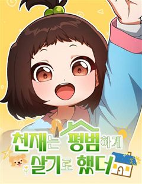
네이버웹툰천재는 평범하게 살기로 했더
세간이 인정한 성공한 인생의 주인공, '손진혁.' 하지만 정작 진혁은 그저 사랑하는 가족와 함께하는 평범한 삶을 살고 싶었을 뿐, 그러지 못한 현실에 쓸쓸하고 외로운 마음을 감출 수 없는데... 어느 날, 사고로 눈을 뜨니 그토록 원하던 부모님을 잃기 전 9살의 시절로 돌아왔다! 과연…
드라마회귀타임슬립감성적인과거네이버웹툰에서 보기 → -
13
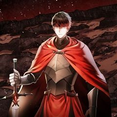
카카오웹툰메모라이즈(MEMORIZE)
[한국 최초의 이세계물 웹소설 메모라이즈. 이제, 그 전설이 웹툰으로 돌아왔다!] 현대와는 다른 세상 홀 플레인. 김수현은 군 전역 후 어느날 갑자기 홀 플레인의 세상에 강제로 소환당한다. 많은 우여곡절을 거치고 끝끝내 정상에 오르는데 성공하지만, 홀 플레인에서 활동한 10년의 세월은…
드라마회귀서스펜스카카오웹툰에서 보기 → -
14
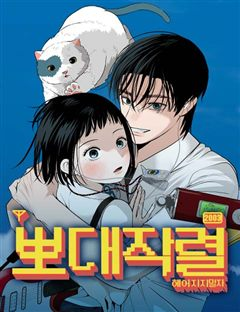
네이버웹툰뽀대작렬
사랑하지 않는 시대 꿈과 사랑은 커녕 계획도 사람도 없는 서른일곱 '김하영' 그런 그녀가 20년 전 뽀대나게 사랑했던 열일곱 '김 선'으로 돌아간다.
드라마회귀감성적인청춘명랑녀네이버웹툰에서 보기 → -
15카카오웹툰
정령왕 엘퀴네스
우연히 교통사고로 사망한 평범하기 짝이 없던 고등학생 강지훈은 명계에서 자신이‘인간으로 잘못 태어난 물의 정령왕’이라는 사실을 알게 된다. “물의 정령을 만들라니? 어떻게 하는 건데?” 인간으로 잘못 태어났던 물의 정령왕 엘퀴네스의 좌충우돌 모험기!
드라마환생카카오웹툰에서 보기 → -
16
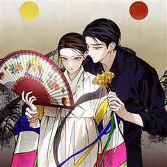
카카오웹툰칠흑이 삼킨 여름
할머니가 돌아가신 후, 도시에서의 생활을 정리하고 고향에 돌아온 ‘나수현’. 수현은 뭔가에 이끌리듯, 할머니가 살아생전 절대 오르지 마라 했던 ‘오봉산’에 오른다. 산속에서 길을 잃고 기이한 일에 휘말려 위험에 처한 찰나, 수현은 목이 잘려도 멀쩡한 ‘서문주’라는 남자의 도움을 받는데…
드라마환생서스펜스설렘폭발카카오웹툰에서 보기 → -
17
 카카오웹툰
카카오웹툰시한부 드래곤의 생존법
시한부 인생 끝에 웹툰 속 드래곤으로 빙의했는데 또 다시 시한부 인생, 아니 용생이 되었다?! 갑부에다 수천년의 수명을 가진 세계관 최강의 생물 드래곤의 헤츨링으로 태어난 로이스. 하지만 시시각각 닥쳐오는 개연성 없는 위기에 언제 죽을 지 모른다니 이게 무슨 소리야! 이대로 얌전히 죽…
드라마빙의개그카카오웹툰에서 보기 → -
18
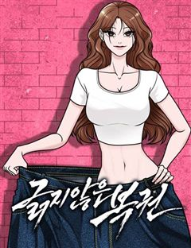
네이버웹툰긁지 않은 복권
얼굴은 존예지만 뚱뚱한 은지는 긁지 않은 복권의 정석이라고 불린다. 남들보다 많은 양을 먹는 점을 이용해 먹방 유튜버가 되었지만, 뚱뚱한 체형 때문에 조롱 당하기 일쑤다. 저조한 조회수, 늘지 않는 구독자에 희망을 잃어가는 은지. 그러던 어느 날 우연히 주운 s복권을 긁은 뒤 하루아침…
드라마환골탈태고자극드라마자극적인인생역전네이버웹툰에서 보기 → -
19
 네이버웹툰
네이버웹툰천재 무림 트레이너
대 역병 시대, 운영하던 헬스장이 망했다. 어떻게든 먹고 살아보려던 찰나 읽고 있던 무협지에 빙의했다. 도착해보니 천년 소림이라 좋아했는데, 이건 뭐? 다들 잘못된 지식과 운동법으로 몸이 다 망가져 있잖아?! 헬스 트레이너였던 내가 이걸 어떻게 참아! 현대의 지식과 운동법으로 사형들을…
드라마빙의동양가벼운무협/사극네이버웹툰에서 보기 → -
20
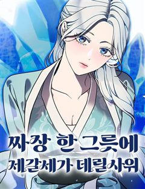
네이버웹툰짜장 한 그릇에 제갈세가 데릴사위
짜장면 한 그릇으로 전 무림을 평정할 수 있을 것 같다? 최고의 중식 요리사를 꿈꿨지만 중국 송나라 시대로 보내져버린 주인공! 하지만 깨어난 몸에 무공은 전혀 없고, 남은 거라곤 전생에서 익힌 요리 기술들뿐. 그런데 이 요리들... 반응이 매우 좋다! 이번 생에는 과연 짜장면으로 중원…
드라마환생하렘병맛가벼운네이버웹툰에서 보기 → -
21네이버웹툰
영업 천재가 되었다
나는 빚을 갚기 위해 당장 할 수 있는 일을 선택했고, 그게 내겐 영업이었다. 그리고 내게 다시 한 번의 기회가 주어졌다.
드라마회귀감성적인현대오피스네이버웹툰에서 보기 → -
22
 카카오웹툰
카카오웹툰상태창에서 시한부가 빗발친다
3,000편이 넘는 희대의 명작 <여명의 참회>에 빙의했다. 그것도 단두대형에 처해진 공작가의 후계자이자 나의 차애 캐릭터인 ‘미첼 네프티스’로. 하지만 상태창을 열어보니 사망까지 D-3. 이대로는 죽을 수 없다는 생각에 어떻게든 살아남아보니 전개를 바꿀 때마다 경험치가 지급된다?!…
드라마빙의미스터리카카오웹툰에서 보기 → -
23카카오웹툰
초심 잃은 아이돌을 위한 회귀 백서
‘이제는 아이돌 노래 말고 real music을 하고 싶다.’ 똥망 소속사에 지쳐 작곡 부업을 뛰던 8년 차 아이돌 윤이든. 청담동 내 집 마련엔 성공했지만, 예술병이 세게 찾아왔다? [3만 번째 팬이 당신에게 실망했습니다.] [초심 잃은 아이돌을 위한 초심 되찾기 프로젝트를 시작합니…
드라마회귀설렘폭발성장물카카오웹툰에서 보기 → -
24
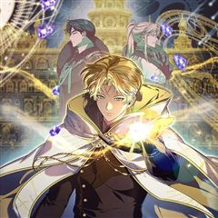
카카오웹툰변경백 서자는 황제였다
바리엘 제국의 마법사이자 어린 나이에 황제가 된 이안은 조카의 반란으로 감옥에 갇힌다. 이안을 구해주러 온 마법사 나움은 금지된 시공간 마법을 사용한다. 금지된 마법은 황제 이안을 과거 100년으로 이끌고 100년 전 멸문한 변경백 가문의 서자 이안에게 빙의한다. 서자 이안은 접경지인…
드라마환생사이다서스펜스카카오웹툰에서 보기 → -
25
 네이버웹툰
네이버웹툰환생했더니 단종의 보모나인
조선의 비극적 왕 단종 곁으로 환생한 여인, 뜻밖에 그의 보모가 되어버린다. 역사의 비극을 바꿀 기회 앞에서 그녀는 어린 군주를 지키기 위해 권력의 소용돌이에 맞서게 되는데…
드라마타임슬립동양풍로맨스과거동양네이버웹툰에서 보기 → -
26
 카카오웹툰
카카오웹툰마법명가 막내아들
내가 쓴 허술한 개연성과 마구잡이 설정의 소설 속에 들어와 버렸다. 하필이면 17살에 가문 내에서 숙청당하는 비운의 망나니 조연, '라센 메이튼'이 되어서. 티타늄 수저에 빙의. 그리고, 적당히 중간을 유지하면서 조용하게 지낸다면, 유유자적 돈낭비 라이프도 꿈이 아니다! 작가로서. 그…
드라마빙의미스터리카카오웹툰에서 보기 → -
27네이버웹툰
두 번 사는 프로듀서
“어, 미안. 근데 먼저 한 사람이 임자 아니야? 방송계가 원래 그런 거잖아.” 꿈을 가지고 패기 있게 방송국에 입사했지만, 쓰레기 같은 선배를 만나 10년 동안 모든 걸 빼앗기기만 한 준수. 뼈저리게 후회하고 이를 갈았지만, 바로잡을 수가 없었다. 절망에 잠겨 모든 걸 포기하려던 그…
드라마회귀사이다인생역전직업드라마네이버웹툰에서 보기 → -
28카카오웹툰
검신급 공무원의 회귀
인류 최고의 검사이자 대한헌터협회 소속 공무원 헌터, 안수호. 게이트의 종식을 위해 공직자가 된 그는 최후의 게이트라 불리는 재앙급 게이트들 중에 하나가 공략되었을 때 동료들에게 배신당하고 말았다. 동료들이 그를 배신한 이유? 게이트가 종식되면 그들의 권력이 사라지기 때문. 이렇게 끝…
드라마회귀사이다카카오웹툰에서 보기 → -
29네이버웹툰
재벌의 품격
1990년대 대한민국을 대표했던 재경 그룹 회장 손중길. 눈을 감고 30년 뒤, 2022년 손자 손정훈의 몸으로 눈을 뜬다. 30년 전과 비교해 눈에 띄게 쇠퇴한 재경 그룹. 손중길은 자신이 일궈 낸 그룹을 다시금 정상에 올리려 한다.
드라마회귀빙의환골탈태사이다네이버웹툰에서 보기 → -
30
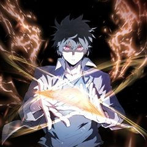
카카오웹툰용사파티 대마법사의 환생
천재마법사 린은 13살 때, 세상을 혼돈에 빠뜨리려는 거악 ‘심연’을 물리치고자 리스타를 위시한 용사파티와 함께 여행을 떠난다. 하지만 싸움은 점점 격렬해지고 마지막 순간에 린의 몸은 ‘심연’의 암독에 당해서 생명이 위태로워진다. “다시 돌아올게”라는 말을 남기고 강제 휴면 상태에 빠…
드라마환생사이다카카오웹툰에서 보기 →